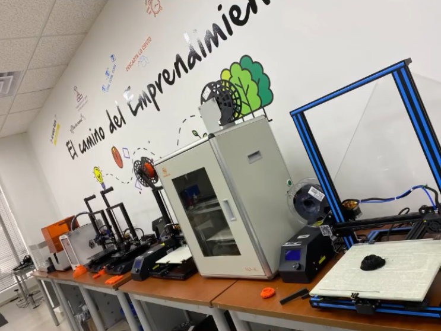
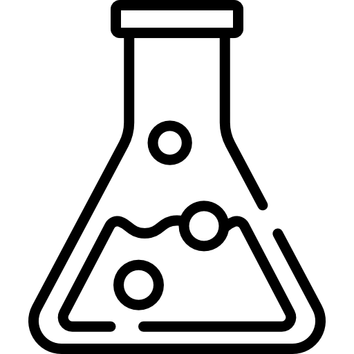

¿Qué es Tecnoparque?
Es un programa y estrategia de innovación tecnológica del Servicio Nacional de Aprendizaje,
creado para brindar apoyo en la materialización de proyectos de desarrollo tecnológico en
prototipos funcionales y productos.
Objetivos de Tecnoparque.
Tecnoparque es un programa del SENA que tiene como objetivo principal promover el desarrollo de la innovación,
la tecnología y la competitividad empresarial en Colombia.

¿Cuáles son los servicios que ofrece Tecnoparque?
-
Acompañar técnica y metodológicamente el desarrollo de proyectos de base tecnológica,
disponiendo de equipo humano experto, ambientes y laboratorios especializados,
para la materialización de prototipos que generen un valor agregado a procesos y servicios del sector productivo.
-
Articular esfuerzos y capacidades entre la Red Tecnoparque, los centros de formación profesional y
los actores del Sistema de Ciencia, Tecnología e Innovación de Colombia facilitando oportunidades de comercialización,
formalización de productos o servicios y registro de propiedad intelectual de prototipos que así lo requieran.
-
Crear espacios para garantizar la generación, apropiación, adaptación, difusión y transferencia de conocimiento y tecnológicas,
desde y hacia los sectores productivos y académicos de las regiones.
¿Cómo se puede acceder a estos servicios?
Para Acceder a los servicios de Tecnoparque debes regístrate en la página oficial
www.redtecnoparque.com
y seguir los pasos del pdf “PASO A PASO REGISTRO DE IDEAS TECNOPARQUE”
¿Qué beneficios se pueden obtener de los servicios que ofrecen?
-
Infraestructura y espacio de trabajo: Acceso a instalaciones modernas y equipadas con tecnología de punta,
incluyendo laboratorios, espacios de coworking, salas de reuniones y áreas de trabajo colaborativo.
-
Asesoramiento y consultoría: Apoyo técnico y empresarial por parte de expertos en diferentes áreas,
incluyendo asesoramiento en desarrollo de negocios, estrategias de comercialización, gestión financiera,
propiedad intelectual, entre otros.
-
Formación y capacitación: Programas de formación y capacitación en temas relevantes para el desarrollo de proyectos
tecnológicos e innovadores, incluyendo cursos, talleres, seminarios y conferencias.
-
Red de contactos y networking: Oportunidades para establecer contactos con otros emprendedores, empresas,
instituciones educativas, inversores y profesionales del sector, facilitando la colaboración, la generación de alianzas
estratégicas y el acceso a recursos adicionales.
-
Acceso a financiamiento: Posibilidad de acceder a programas de financiamiento, inversión o subvenciones para el
desarrollo y la implementación de proyectos tecnológicos e innovadores.
-
Apoyo en investigación y desarrollo: Facilitación de actividades de investigación, desarrollo e innovación a través
de colaboraciones con instituciones académicas, empresas y otras entidades.
-
Internacionalización: Apoyo en procesos de internacionalización de proyectos y empresas, facilitando el acceso a
mercados internacionales, programas de intercambio y cooperación internacional.
Líneas Tecnológicas de Tecnoparque
Ingenieria y Diseño:
Esta línea está enfocada al diseño mecánico, diseño de productos, sistemas CAD/CAM/CAE, optimización topológica,
prototipado rápido y procesos de manufactura avanzada, ingeniería inversa y análisis dimensiona, prototipado 3d e impresión a laser.
- Escáners 3D
- Cortadora laser
- Termoformado
- Fresado CNC
- Impresion 3D

Biotecnología y Nanotecnología
Esta línea está enfocada al trabajo de:
- Biotecnología industrial
- Biotecnología Vegetal
- Medio ambiente
- Agroindustria alimentaria
- Agroindustria no alimentaria
- Nuevos materiales
- Microbiología agrícola y pecuaria
- Energias verdes y biocombustibles
- Nanotecnología
Electrónica y telecomunicaciones
Esta línea está enfocada a:
- Automatización e instrumentación
- Redes inteligentes
- Robótica
- Sistemas embebidos
- Agro electrónica
- Análisis de señales y protocolos
- Infraestructura
- Diseño electrónico
- Telemática
- Internet de las cosas
Tecnologías virtuales
Esta línea está enfocada al desarrollo de:
- Aplicaciones móviles
- Inteligencia artificial y big data
- Realidad virtual y simulación
- Realidad aumentada
- Animación digital
- Diseño y desarrollo de video juegos
- Ingeniería de software
- Desarrollo de contenidos multimediales
- Geotecnología
¿Para quienes está dirigido el Tecnoparque?
El programa está dirigido a cada uno de los residentes en Colombia. El público interno incluye a aprendices,
instructores o investigadores SENA, el público externo incluye a emprendedores empresarios, universitarios en pregrado,
universitarios en posgrado y público general que necesitan apoyo de expertos y acceso a laboratorios especializados
y equipos para materializar sus ideas.
Convenios de Tecnoparque
Tecnoparque suele tener convenios con universidades locales para proyectos de investigación,
empresas relacionadas con el sector tecnológico para el desarrollo de productos o servicios y
alianzas con entidades gubernamentales para capacitación y apoyo a emprendedores.
Requisitos para ingresar a Tecnoparque
-
Debes tener un proyecto o una idea clara relacionada con la tecnología, la innovación o un emprendimiento que pueda
beneficiarse de los recursos y el ecosistema ofrecido por el Tecnoparque.
-
Registrarse en la página de Red Tecnoparque.
Ubicación de Tecnoparque nodo Pereira
Dirección
Carrera 8 # 26-79 Centro Agropecuario y de Comercio y Servicios.
Horario de atención
Lunes a Viernes de 8:00 AM a 12:00 PM y de 1:00 PM a 5:00 PM
Línea de atención
Teléfono: 3135800 Ext. 63122
Correo: rdatecnoparque@snea.edu.co